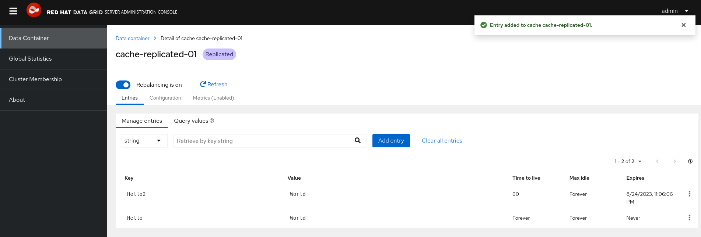

Cache Expiration
Old stuff isn’t always useful. We’ll show you how to set a timer. The Expiration section instructs Data Grid to remove entries from caches when they reach their time limit regarding expiration or idling.
For this purpose, reuse the same cache modifying it to add the new configuration:
apiVersion: infinispan.org/v2alpha1
kind: Cache
metadata:
name: cluster-cache-replicated-01
spec:
clusterName: cluster
name: cache-replicated-01
template: |-
replicatedCache:
mode: "SYNC"
statistics: "true"
encoding:
key:
mediaType: application/x-protostream
value:
mediaType: application/x-protostream
expiration:
lifespan: "60000" (1)
updates:
strategy: recreate| 1 | This setting makes sure that entries expire from the cache after 60 seconds. |
Now, access the web console again and add a second entry. You will notice that new entries will have the configured expiration time, while the old ones are kept forever. There are mechanisms to make sure that all existing entries will expire after the expiration time set in the configuration.

Figure 1. View entries in the web console with its expiration time
Data Grid also allows you to specify how long entries can remain idle before removing the entry from the cache. You can set that with the expiration.maxIdle parameter. I recommend you try it and check if it’s interesting for you!
|